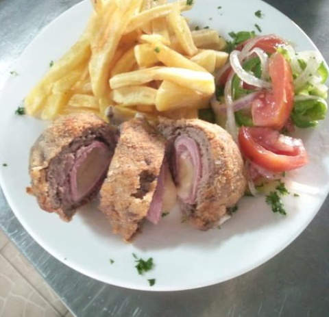
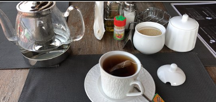

Dans l'HOTEL UHURU nous avons plusieurs services mais je souhaite vous disponibilise deux services dont le bar et le restaurant surtout bienvenue à tous et si vous voulez voir toutes nos produit vaille de nous visite
Dans l'HOTEL UHURU il y a plusieurs Qualités de vins; bienvenue à vous tous.